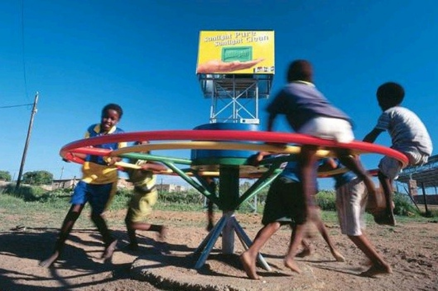

<div id="single-portfolio">
	<div id="portfolio-details" class="container">
		<a class="close-folio-item" href="#"><i class="fa fa-times"></i></a>
		
		<div class="row">
			<div class="col-sm-9">
				<div class="project-info">
					<h3>적정기술 타당성</h3>
					<p>적정기술 구현을 위해서 간단한 구조로 만들 수 있는 모델이 필요했으며, 이를 규격화 시킬 필요가 있었다.</p>
					<p>이미 많은 사람들이 시도를 하고 있는 만큼, 우리가 할 일은 현지에서 제작할 수 있도록 제품을 규격화 하고 도면을 만들어 현지에서 제작 생산할 수 있는 일이라고 생각한다. </p>
				</div>
            </div>
		</div>
	</div>
</div>